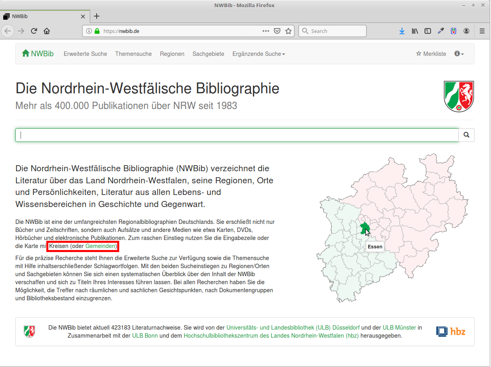
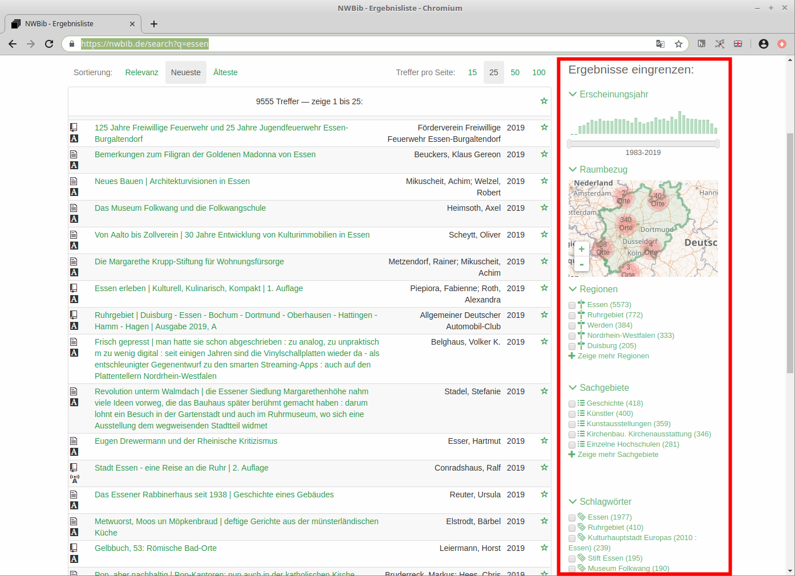
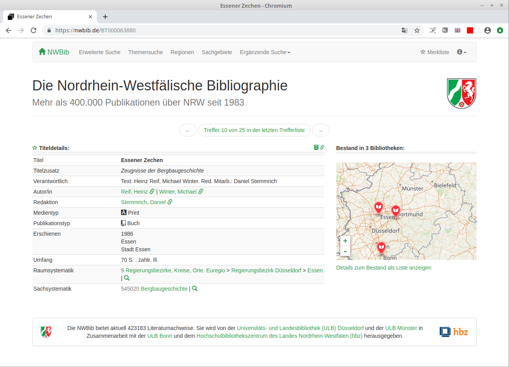
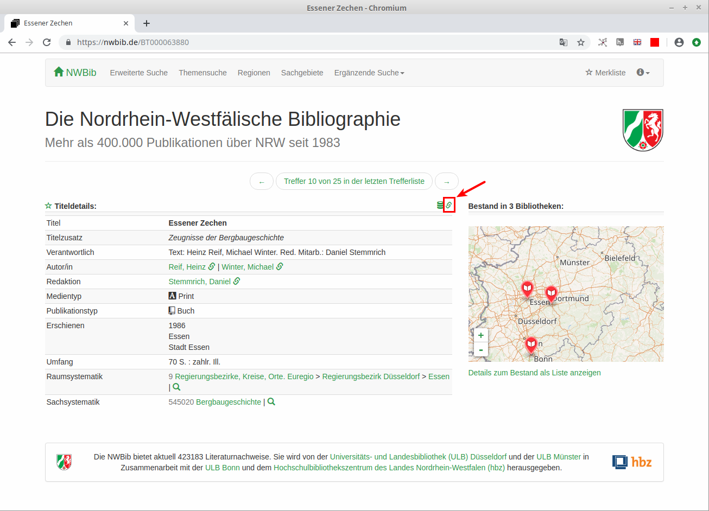
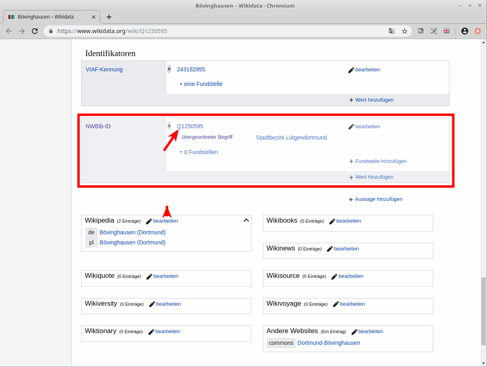
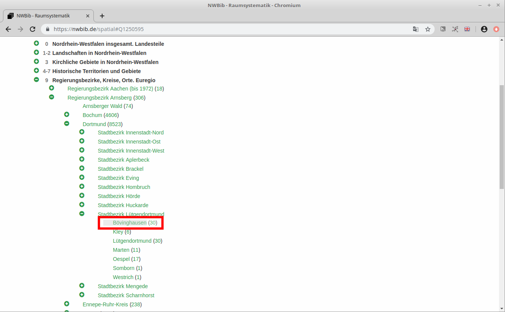
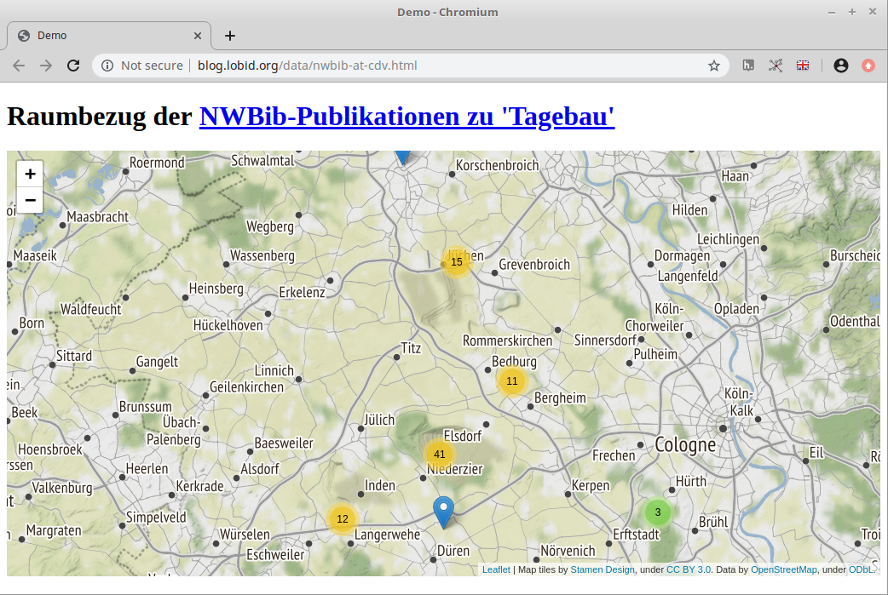

Hinweise zur Nutzung der Nordrhein-Westfälische Bibliographie (NWBib)
Pascal Christoph / @dr0ideLinked Open Data, Hochschulbibliothekszentrum NRW (hbz)

Dortmund, 2019-10-12
Diese Präsentation:
http://slides.lobid.org/nwbib-cdv/

Die NWBib
eine Landesbibliographie
verzeichnet Literatur über NRW, seine Regionen, Orte und Persönlichkeiten
beinhaltet nur Metadaten, keine Objekte!
erfasst neben Büchern vor allem Aufsätze aber auch Landkarten, DVDs & andere Medien
420.000 Einträge ab Erscheinungsjahr 1983
Webauftritt: nwbib.de (basierend auf lobid-resources)
Datenpflege in hbz-Verbunddatenbank
Die Weboberfläche
Demo
Eingrenzen nach Ortsbezug
Einfache Suche

Suchfilter
Einzeltreffer
NWBib und lobid
NWBib: Web-Anwendung auf Basis der lobid-API
Die Webanwendung der NWBib basiert auf der lobid-API
lobid-resources: Die hbz-Verbunddaten als Linked Open Data unter CC0 Public Domain Dedication
lobid-API: JSON(-LD) über HTTP
Link zur lobid-Sicht
JSON: via Klick oder .json

Abfragen der NWBib über die lobid-API
Eingrenzen von lobid-Abfragen auf NWBib-Titel
{
"inCollection":[
{
"id":"http://lobid.org/resources/HT014176012#!",
"type":[
"Collection"
],
"label":"Nordrhein-Westfälische Bibliographie (NWBib)"
}
]
}Nötige Query-Ergänzung: inCollection.id:"http://lobid.org/resources/HT014176012#!"
Inhaltstypen, Paging, Bulk Download
Paging mit "size" und "from"
JSON (format=json), JSON Lines (format=jsonl) sowie gzip werden unterstützt
Download der gesamten NWBib-Daten (223 MB gepackt,1,9 GB ungepackt) möglich
Siehe auch hier
Datenmodell
NWBib-Daten werden von Bibliothekar*innen mit entsprechenden Erschließungsstandards (RDA) erfasst
Für lobid-resources werden die Augangsdaten nach JSON-LD konvertiert
Das Datenmodell ist entsprechend komplex
Elementare Beschreibungsfelder lassen sich aber leicht aus dem JSON extrahieren
NWBib-Ortssystematik und Wikidata
Karte mit Raumbezügen zu bestimmten Suchanfragen
D.h. sie behandeln als Thema einen Landkreis, einen Stadtteil, einen Kirchenkreis, eine Grafschaft etc.
Die Ortsbezüge in der NWBib verlinken auf entsprechende Orte in Wikidata, wo sich wiederum Links auf die NWBib finden (mit der Property P6814 “NWBib ID”)
Siehe z. B. Dortmund-Bövinghausen
Wikidata-Eintrag mit NWBib-Link
Ort in NWbib-Raumsystematik
Angabe des Ortsbezugs im JSON
{
"spatial":[
{
"focus":{
"id":"http://www.wikidata.org/entity/Q1250595",
"geo":{
"lat":51.5189,
"lon":7.32528
},
"type":[
"http://www.wikidata.org/entity/Q253019"
]
},
"id":"https://nwbib.de/spatial#Q1250595",
"type":[
"Concept"
],
"label":"Bövinghausen",
"source":{
"id":"https://nwbib.de/spatial",
"label":"Raumsystematik der Nordrhein-Westfälischen Bibliographie"
}
}
]
}Abfrage von Titeln auf Basis der QID eines Ortes
spatial.focus.id:"http://www.wikidata.org/entity/Q1250595"Ideen
Kartenvisualisierung
 Karte mit Raumbezügen zu einer bestimmten AbfrageOrte & Personen in anderen Datensets
Im Volksliedarchiv zu Westfalen tauchen in den Liednamen etwa folgende Orte auf: Espelkamp, Natzungen, Vreden
In euregio-history.net gibt es die Spalten 'field_place' und 'field_regions'. Die dort eingetragenen Orte finden sich häufig in der NWBib-Raumsystematik / in Wikidata.
Über das Freilichtmuseum Detmold und die Gebäude dort gibt es 176 Einträge in der NWBib
Weiterführende Informationen im Blogbeitrag "NWBib-Daten für Coding da Vinci".
Bei Fragen: Kontaktieren Sie uns über Mastodon, Twitter, IRC, E-Mail.